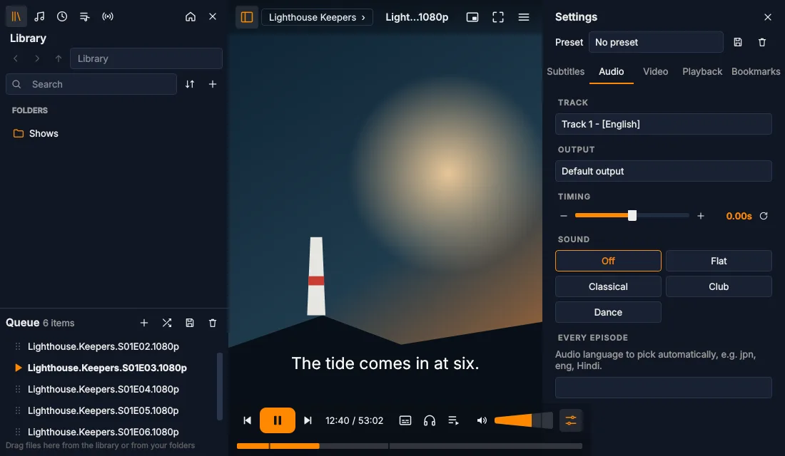
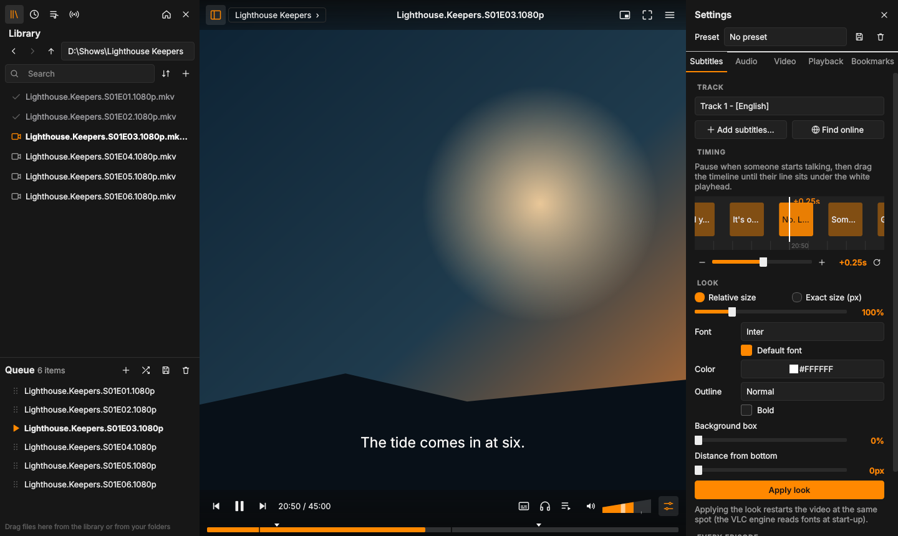
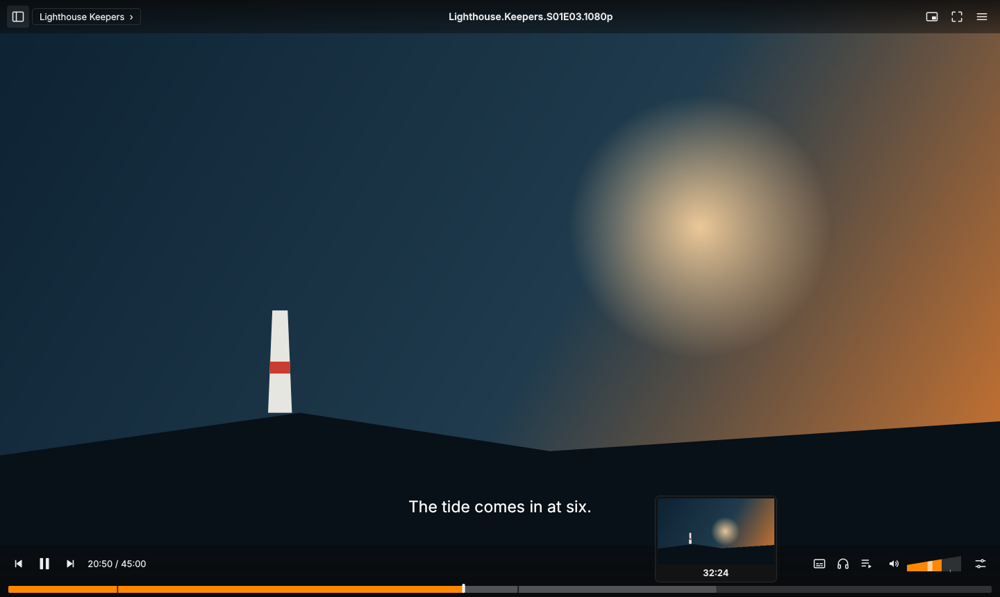
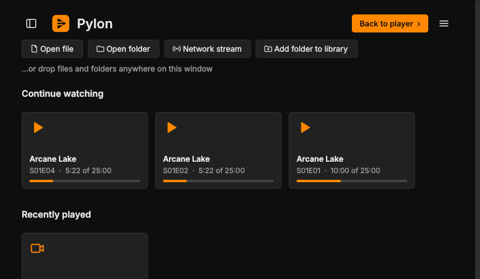
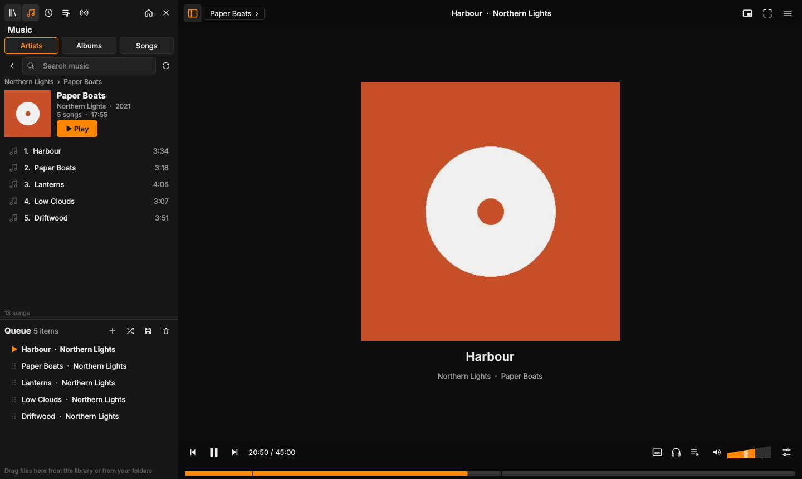

Pylon is a free media player built on VLC's engine. It plays everything VLC plays, then adds the small things that make a whole season easier to watch.

Everything you'd expect from a player, plus a few ideas of its own. Pick one to see it.




Subtitle timing, picture and speed, saved once and applied to every episode.
Tick off episodes yourself, or several at once from the queue.
Pylon checks once a day and updates in place. Your settings stay.
MKV, MP4, AVI, streams and more, because VLC's engine does the playing.
Pylon uses the VLC that's already on your computer instead of shipping its own copy. You get VLC's format support and hardware decoding, and a much smaller download.
Run the setup file. It installs just for you, no admin needed. If SmartScreen appears, choose More info, then Run anyway.
Drag a file or a whole season folder onto the window. Pylon keeps itself up to date from here.
Unzip it and move it to Applications. The first time, right-click it and choose Open, because the build isn't signed by Apple yet.
Drag a file or folder onto the window. The Mac build is experimental, so reports are very welcome.
From your package manager, for example sudo apt install vlc.
Make it executable with chmod +x Pylon-*.AppImage, then double-click it.
Drag a file or a whole season folder onto the window and press play.
Free, no account, no ads. Always the latest version.
Release notes, checksums and older versions are on the releases page.
Pylon started from Juxtopposed's VLC redesign concept and grew into its own app, with its own features and a few different choices along the way.
Made by Nirmal Joseph Ukken. Read how it was built, or tell me what to improve.
Pylon is a new interface on top of VLC's playback engine. Using the copy on your computer keeps Pylon small, and you get VLC's format support, hardware decoding and its security updates.
Free and open source under the MIT licence. No account and no analytics. The only thing Pylon contacts by itself is GitHub, once a day, to check for updates, and you can turn that off in Preferences.
No. Pylon is an independent project and isn't affiliated with or endorsed by VideoLAN.
Please open an issue on GitHub. Pylon is in beta, and most fixes ship within a day or two.